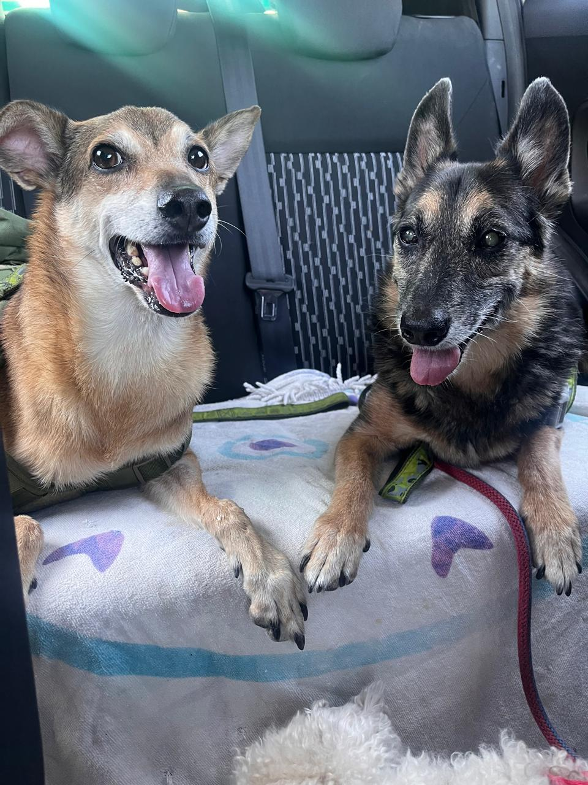
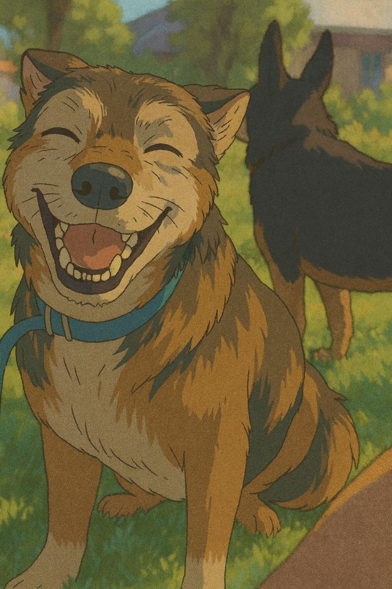

Los chicos de Almagro
¡Momentos de la manada!

Compartiendo Viaje

Casi hermanitos

Momento feliz
Curiosidad
Los gatos pueden girar su cuerpo en el aire para caer de pie, una habilidad que desarrollan a las tres semanas. Los perros mueven la cola para indicar emoción, mientras que un gato moviéndola rápidamente suele estar nervioso o enfadado.